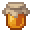

HoneyHoney sources
Each frame fills with whatever the bees worked most while filling it.
If one source is close to half of it all, the honey is named for it. Otherwise it's wildflower.
An orchard in blossom, a field of sunflowers, a lavender bed: plant around your hives.
Taking the honey
Put capped frames in the extractor, turn the crank, and draw the honey off into bottles.
A frame gives three jars, wax and the frame back. Effects last three minutes.
Wildflower Honey
Golden and mixed, from a meadow of everything.
Forager's Eye: ripe fruit, berries and crops nearby sparkle
From: Any flowers, when no one kind leads.
Orchard Blossom Honey
Pale and delicate, from apple, pear, plum and peach blossom.
Beekeeper's Calm: bees won't stay angry at you
From: Fruit trees in blossom, in spring.
Orange Blossom Honey
Bright and perfumed, from orange trees in flower.
Vigour: you tire half as fast
From: Orange trees in blossom, where it's warm.
Cherry Blossom Honey
Faintly pink, from cherry blossom.
Petal Fall: you fall softly
From: Cherry trees and cherry groves, in spring.
Berry Blossom Honey
Dark and fruity, from the flowers of berry bushes.
Green Thumb: plants you walk among grow on
From: Blueberry, raspberry, bramble and more in flower.
Sunflower Honey
Thick and sunny yellow.
Sunlit: out in the sun, you slowly fill up
From: Fields of sunflowers, all summer.
Lavender Honey
Pale violet, and calming.
Serenity: monsters notice you later
From: Lavender, from the herb garden.
Forest Honeydew
Dark, strong forest honey, not from flowers but the sweet dew on spruce.
Rooted: hard to knock back
From: Spruce woods, when little else flowers.
Ancient Honey
Rare, sea-green honey from flowers older than the world.
Old Sight: monsters nearby glow
From: Torchflowers and pitcher plants.
The honeys
| Honey | Effect |
|---|---|
| Wildflower | Forager's Eye |
| Orchard | Beekeeper's Calm |
| Orange | Vigour |
| Cherry | Petal Fall |
| Berry | Green Thumb |
| Sunflower | Sunlit |
| Lavender | Serenity |
| Honeydew | Rooted |
| Ancient | Old Sight |
Click a honey to turn to its page.